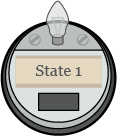
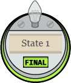
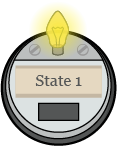
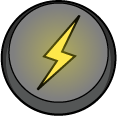
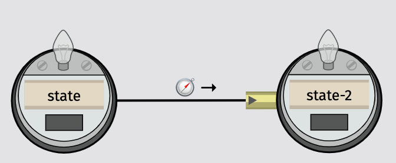
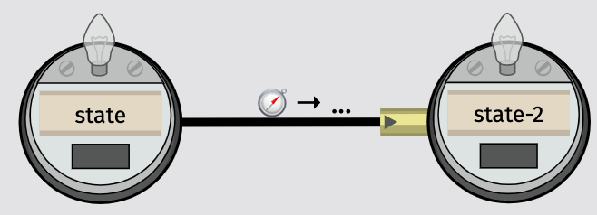

Graph
The graph is the central part of the application. In that part, you can draw a state machine.

Node
A node in the graph represents a state of the Turing machine.
When you click on the node, a pop up appears. In that popup you can change:
- the name of the state;
- if the state is final, i.e. if the Turing machine stops when reaching this state. When the state is final, the node will looks like ;
- delete the state.
When the Turing machine is running, the node of the current state will looks like :.
To set a state as an initial state, draw a transition from the generator to the node.

Generator
When linking a node to the generator, the corresponding state will be set as the initial state of the machine.
Transition
Between two nodes, you can draw one edge. One edge correspond to one or more transitions in between the two corresponding states. If the edge represents one transition only, it would looks like , if the edge represents two transitions or more, it would look like .
When you click the edge, you can set for each corresponding transition:
- the symbol to read from the tape to go through this transition;
- the symbol to write on the tape when going through this transition;
- the movement of the head of the tape to do after going through this transition;
- delete the transition.
Tape
Import/Export
Import
Export
Interaction Mode